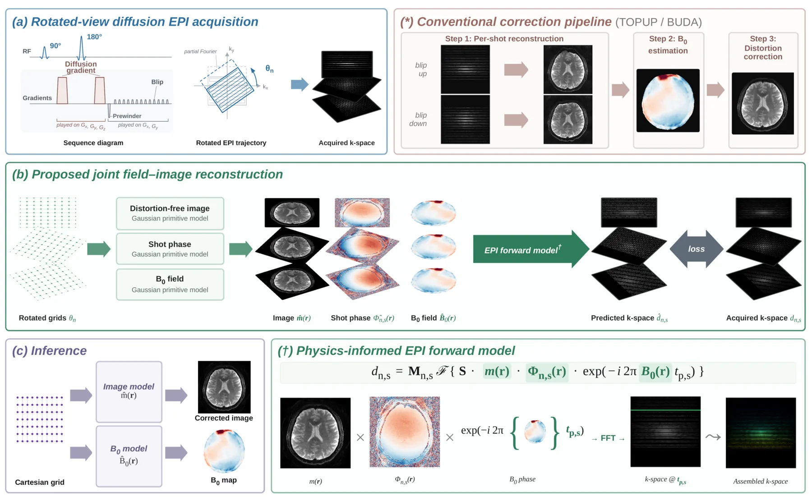
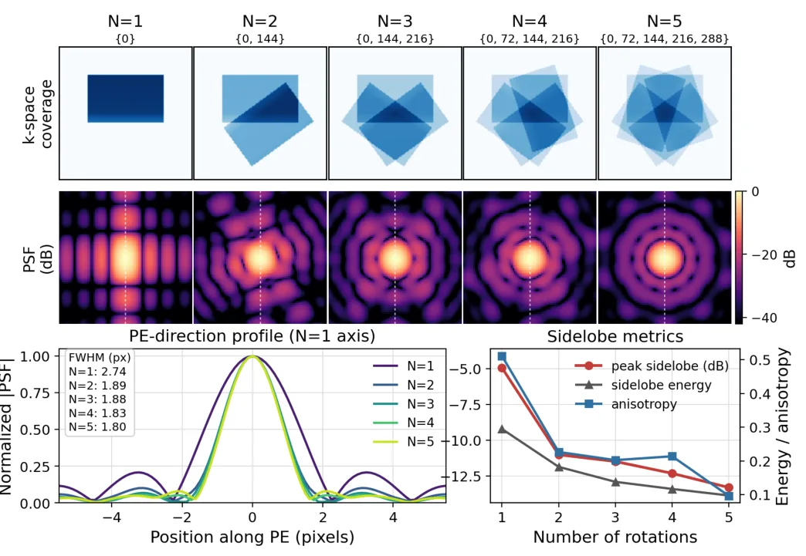
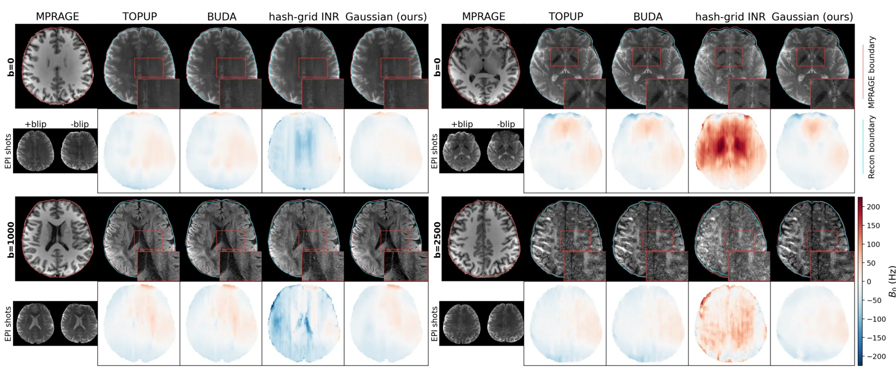
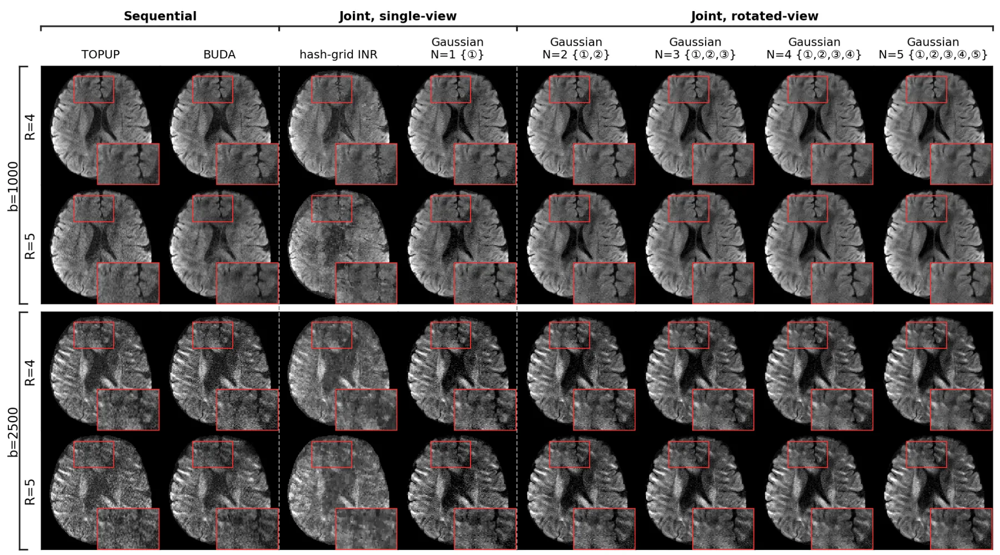
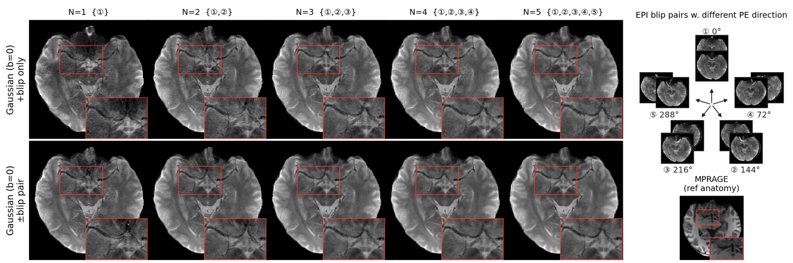
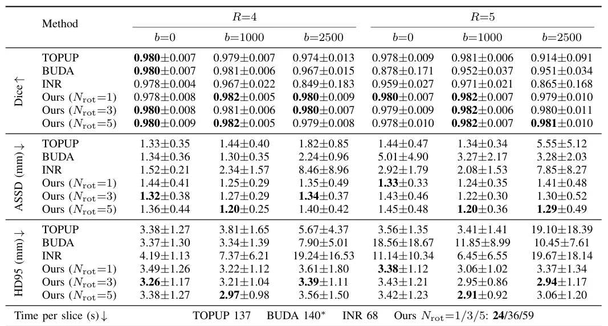

用 Gaussian primitives 联合估计场图和图像的旋转视角 EPI 扩散 MRI 畸变校正Distortion-Corrected Diffusion MRI Using Rotated-View EPI and Joint Field-Map/Image Estimation with Gaussian Primitives
与 SLAM/GNSS 直接相关性弱；保留价值在于 Gaussian primitives 的连续参数化和 physics-informed optimization 思路。
一句话工作总结
虽然是医学成像工作，但展示了 Gaussian primitive + 物理 forward model 解决连续场反问题的路线。
摘要
该文针对 diffusion/fMRI EPI 因 B0 场不均匀产生的几何畸变，提出不先重建畸变图像，而是直接从 k-space 联合估计 distortion-free image 与 B0 field。图像和场图都表示为 Gaussian primitives 并嵌入 MRI physics forward model；rotated-view EPI 从多个相位编码方向分散畸变，给 B0 估计提供更强约束。实验显示在 in vivo brain diffusion EPI 中，与无畸变结构参考的脑边界一致性最好，高 b-value 和高加速下改进更明显。
Echo Planar Imaging (EPI) is the standard acquisition technique for diffusion and functional neuroimaging, enabling rapid imaging but suffering from geometric distortions caused by B0 field inhomogeneities. Existing correction methods first reconstruct distorted images using parallel imaging, then estimate the B0 field and correct the distortion in the image domain. In this sequential process, reconstruction artifacts at high acceleration factors and low SNR at high diffusion b-values degrade B0 estimation and limit the overall correction quality. We propose a physics-informed framework that jointly estimates the B0 field and distortion-free image directly from k-space data, without depending on an intermediate parallel-imaging reconstruction for the correction. The image and the B0 field are each represented as a superposition of Gaussian primitives embedded within an MRI physics forward model. The explicit, continuous parameterization captures both smooth regions and tissue boundaries and supports rotated-view EPI acquisitions without interpolation. The diffusion-weighted image is modeled as real and non-negative, with the image phase absorbed into a per-shot phase factor. Rotated views distribute distortions across multiple phase-encoding orientations, improving point spread function isotropy and providing stronger constraints for B0 estimation. On in vivo brain diffusion EPI, the proposed method attains the closest brain-boundary agreement with a distortion-free structural reference, with the largest improvement over sequential methods at high b-value and high acceleration. Extensive visual comparisons further show improved detail fidelity and noise suppression.
中文解读摘录
- 为什么看：医学成像方向，和 SLAM/GNSS 主线距离较远；但它把图像和 B0 field 都表示为连续 Gaussian primitives，并嵌入物理 forward model，属于 Gaussian 表示参与反问题求解的一个信号。
- 方法要点：直接从 k-space 联合估计畸变-free image 与 B0 field；rotated-view EPI 提供多方向约束，Gaussian primitives 支持连续参数化和边界表达。
- 结果信号：在 in vivo brain diffusion EPI 上，脑边界与 distortion-free structural reference 的一致性最佳，高 b-value 和高加速下优势更明显。
- 跟踪建议：对机器人三维重建的直接价值有限；可关注其 Gaussian primitive + physics-informed optimization 是否能启发传感器物理约束下的连续场重建。
- 链接：abs · PDF
图表/页面预览
{kind=link}

{kind=link}

{kind=link}

{kind=link}

{kind=link}

{kind=link}
